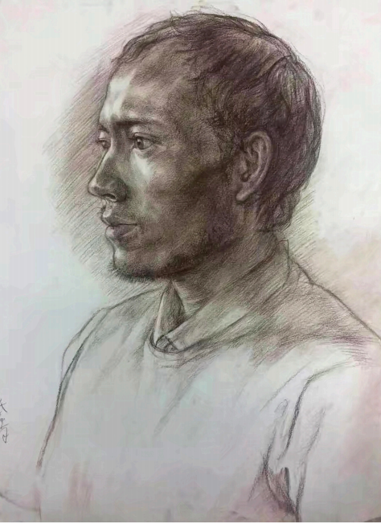
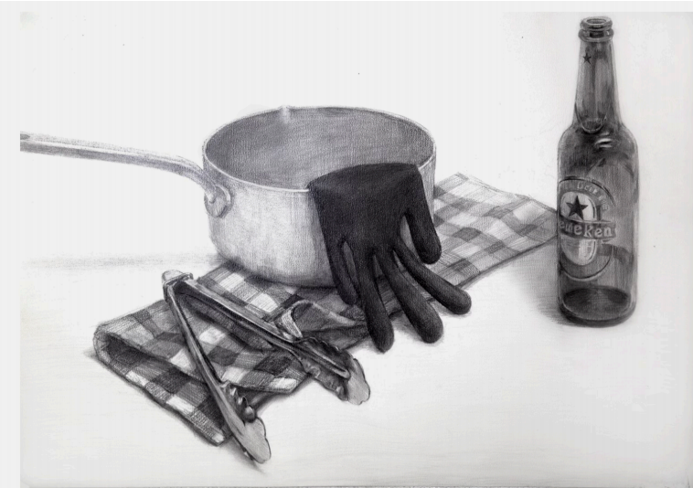
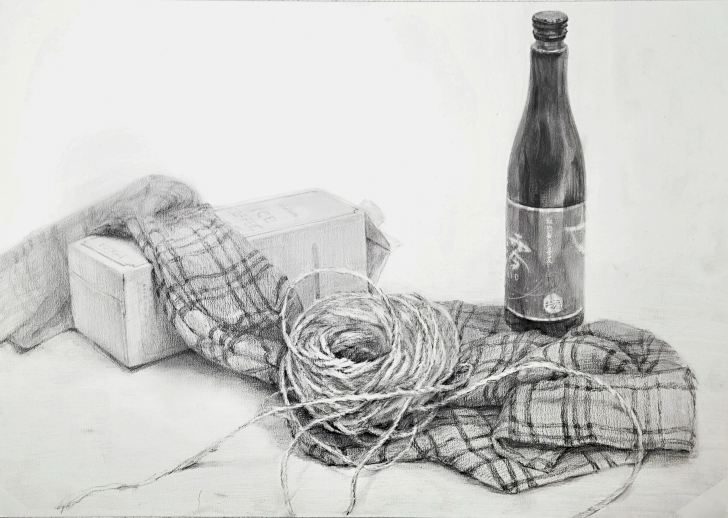
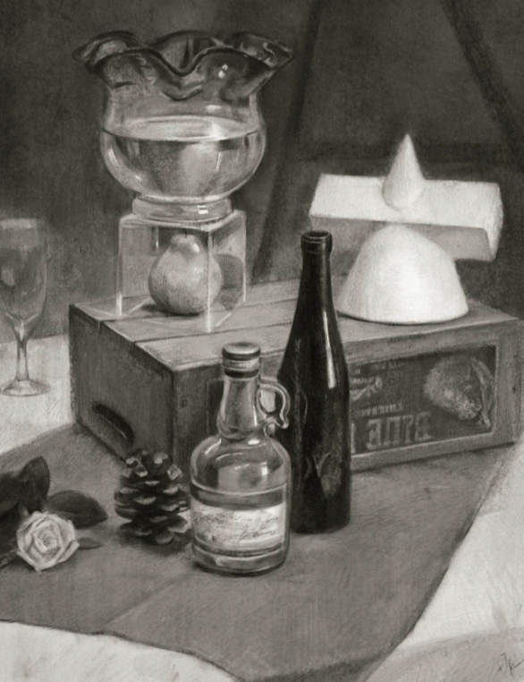
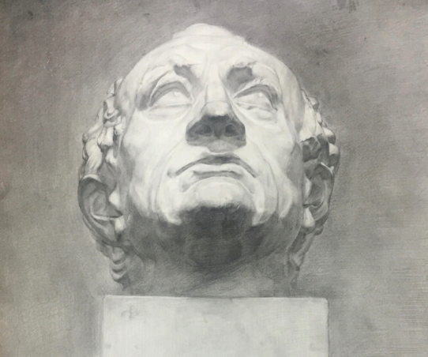
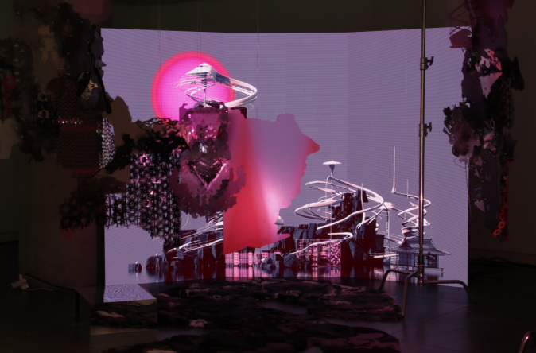
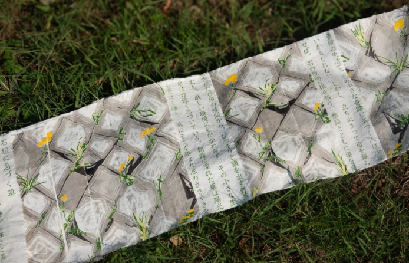
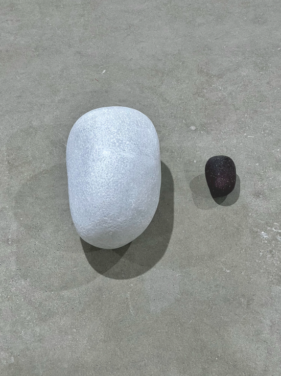

共通テスト利用
部分大学・学部会使用共通テスト成绩。外国語可以选择中国語，但目标校是否采用该科目、需要几科、各科配点如何，都必须逐校确认。
日本美术大学的招生方式并不统一。部分选拔利用共通テスト成绩，另一些会要求实技、作品集、日语、面试或校内考。先查目标校募集要项，再决定准备顺序。
部分大学・学部会使用共通テスト成绩。外国語可以选择中国語，但目标校是否采用该科目、需要几科、各科配点如何，都必须逐校确认。
按学校和专业准备素描、色彩、造型、作品集、志望理由、日语与面试等。需要哪些项目，以当年度募集要项和考试内容为准。
两条路径可以同时考虑。课程不会预设“哪一条一定更容易”，而是先把能报的方式、考试科目和时间排出来。
旧版课程中的主要班型与价格完整保留在下方。长表改为分组展开，方便直接找自己需要的课程。
| 冲刺班（专题训练） | 60 节 / 180h・3–4 个月 | ¥498,000 大课 |
|---|---|---|
| 强化班（针对训练） | 120 节 / 360h・7–8 个月 | ¥598,000 大课 |
| 安心班（基础巩固） | 180 节 / 540h・9–10 个月 | ¥798,000 大课 |
| 基础班（入门学习） | 240 节 / 720h・1 年 | ¥898,000 大课 |
| 学部作品集 16h | 16 节 / 16h | ¥128,000 作品集指导・1 对 1 |
|---|---|---|
| 学部作品集 24h | 24 节 / 24h | ¥180,000 作品集指导・1 对 1 |
| 色彩构成 48h | 16 节 × 3h | ¥288,000 1 对 1 |
| 色彩构成 72h | 24 节 × 3h | ¥432,000 1 对 1 |
| 作品集 + 色构 64h | 16h + 48h | ¥406,000 作品集指导・1 对 1 |
| 作品集 + 色构 88h | 16h + 72h | ¥550,000 作品集指导・1 对 1 |
| Online 60 节 | 180h・3–4 个月 | ¥398,000 大课 |
|---|---|---|
| Online 120 节 | 360h・7–8 个月 | ¥498,000 大课 |
| Online 180 节 | 540h・9–10 个月 | ¥698,000 大课 |
| 大学院作品集 16h | 16 节 / 16h | ¥199,000 1 对 1 |
|---|---|---|
| 大学院作品集 24h | 24 节 / 24h | ¥288,000 1 对 1 |
| 愿书修改 | — | ¥30,000 |
作品集不是只看最后几张成品。主题、作品组合、制作进度和说明方式都需要一起调整。
目标院校・主题方向・作品数量与类型・制作时间表。
素描、绘画、美术构成、设计训练、工具与材料使用。
主题挖掘、个人方向、概念表达与不同媒介之间的组织。
定期讲评、完成度检查、院校要求核对与最终作品集整理。
教师信息保持简洁，下面直接展示学生与讲师作品。画廊横向滑动，不再把十几张图竖着铺满页面。









